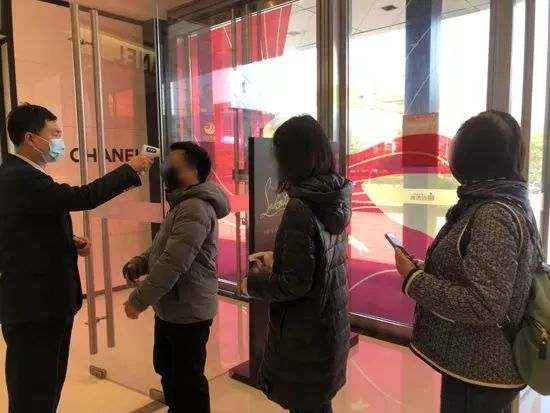

你宅在家刷短视频，可视频博主们却快要断粮了
原文链接 备份链接 图片来源：Unsplash 记者：郑洁瑶 编辑：文姝琪 “ 看视频的人变多了，拍视频的人却没有变得更好。 ” 小九犹豫再三，决定还是向粉丝解释一下现在的情况。他穿着睡衣，坐在电脑前，打开了相机。 “各位，由于疫情的原 …
杭州大厦 图片来源：linkshop
记者：楼婍沁 编辑：许悦
“
2月20日，杭州大厦最高客单价成交的就是一单名表生意，成交额超过35万元。
”
“终于等到你！”
这是浙江杭州奢侈品及高端购物中心“杭州大厦购物城”在其微信公号发布将恢复营业的消息后，被点赞最多的一条评论。
2月20日，因新冠肺炎疫情影响关门歇业的浙江杭州大厦购物城正式恢复营业。从当天营业情况看，消费者终于等到商场开门的心情绝不是杜撰的。
据杭州网报道，尽管当日营业时间缩短至12点到下午五点的五个小时，但杭州大厦全店销售额突破1100万元，超过上年同期全天从早十点到晚十点营业12小时的销售额。

杭州大厦开业当天消费者排队于商场入口测温 图片来源：杭州网
经界面时尚梳理，截至发稿，杭州绝大多数商业综合体都已重新开门迎客。而如果搜索这些商场的恢复营业消息推送，会发现消费者迫切想要逛街的心声充斥在相关评论区。
一位杭州万象城购物中心的工作人员告诉界面时尚记者，自从对外公布了要恢复营业，消费者的咨询就源源不绝。比如，不少消费者都通过商场微信公号后台留言咨询店铺和专柜开业情况。据他介绍，其中询问度最高的店铺包括快时尚品牌Zara、部分美妆护肤品牌以及餐厅。
不过，他也提到，高询问度并不等同于高人流。他表示，虽然已有部分顾客到店选购，但商场整体客流量还是少，而且即使顾客来到商场，也一般目标明确，买了要买的商品就快速离开，和以前的“逛街”还是有一些区别，“毕竟现在还是非常时期，大家都会更小心，而且之前拉客的餐厅、电影院都还不能进客嘛。”
杭州大厦一家奢侈鞋履品牌专柜的营业员也向记者表达了类似的观察。她说，杭州大厦线下店开业当日，她所在的专柜没有迎来进店客人。
但她还是完成了4单业绩，全是顾客通过微信直接向她下单完成的。她分析称，试衣服、鞋等产品需要在店铺停留时间较长，且需要有很多额外接触物品和人的机会，可能还是会影响部分消费者的选择。而且现在线上退换货也方便、有保障，因此消费者完全可以选择线上下单。而且实际上在疫情之前，线上购物也已经成为他们重要的营业手段。

图片来源：杭州网
如界面时尚此前曾报道的，收到线下商场歇业、消费者信心减少等因素的影响，不少时尚品牌开始尝试通过微信群、直播、朋友圈发图等方式展开线上销售。而随着线下门店开业，这些之前着重于发送产品信息的线上渠道，也开始分享关于线下门店营业情况的信息，用以联系消费者。
《杭州日报》在相关报道中提到，杭州大厦一时装专柜的导购就尝试通过直播展示门店消杀情况，以希望增强消费者到线下实体店消费的信心。
“我们还是要努力吸引顾客来店里看看，”上述鞋履专柜营业员说，“线下购物以货带货，做成大单子的概率肯定还是更高些。”
相较而言，高级腕表等硬奢侈品品牌的线下客流和销售业绩都已接近正常水平。
杭州大厦的销售人员在接受前述杭州网采访时提到，“名表价格高，顾客还是要到现场比较放心”，而表款细节前期都可以通过线上渠道沟通好，所以顾客到店付完款取好货就能离开，可以实现最短时间的停留。2月20日，杭州大厦最高客单价成交的就是一单名表生意，成交额超过35万元。
当然，从整体上看，尽管营业秩序正在恢复，但商场们要想回归常态仍需要一段时间。
一方面，大多数商场目前开业时间都较短，基本都是中午时分开门，傍晚就关店歇业。同时，消费者需要提供杭州城市健康绿码，并通过体温检测方能进入店铺，或多或少会影响部分消费者出门到店的欲望。
除此之外，影院、餐厅等易造成人员聚集的场所也都未开放，也影响了购物中心的整体体验，使得真正的“逛街”只能打折扣展开。
未经授权 禁止转载

原文链接 备份链接 图片来源：Unsplash 记者：郑洁瑶 编辑：文姝琪 “ 看视频的人变多了，拍视频的人却没有变得更好。 ” 小九犹豫再三，决定还是向粉丝解释一下现在的情况。他穿着睡衣，坐在电脑前，打开了相机。 “各位，由于疫情的原 …
原文链接 备份链接 - 疫 情 之 下 - 我突然觉得，我们这些非疫区的超市员工， 也成为了一线的战士。 ” 我所在的县城内，有四家大型超市。今年，当整个县城所有商业活动都停止时，唯有我们，依然坚持开业。平时总把对方作为竞争对手，此时却有 …
原文链接 备份链接 《创新经济战疫计划》，是燃财经在新型肺炎疫情期间推出的特别栏目，关注创新经济企业遇到的新难题、商讨应该采取的新对策，希望能够帮助中小企业一起战胜挑战、把握机会。 作者 | 闫丽娇 编辑 | 周昶帆 刚刚过去的2月15 …
原文链接 备份链接 “人力短缺是最直接和最普遍的问题” 2月18日晚18点15分，从安徽黄山北站开往杭州东的D5580车次准时出发。这是一趟为杭州复工人员定制的“复工专列”，车上的543名乘客全都是返杭就业人员，他们是当前杭州企业急需 …
原文链接 备份链接 「健康码」可能是支付宝历史上开发时间最短、上线最快的超级项目。从支持杭州余杭区开发团队推出全国首个「健康码」到浙江省版、四川省版、海南省版、重庆版……只用了七八天。 这个涉及数亿亟待复工的中国人的健康码，背后是一群戴着 …